SQL
什么是SQL？
SQL, 全称为Structured Query Language（结构化查询语言)。 要讲SQL就绕不开database(数据库), 平时所说的数据库，一般就是指的 Relational database(关系型数据库)。
数据库是用来存储大量数据的一种软件，那么SQL呢是用来操作数据里的数据，具体来说SQL可以做数据查询，数据更新，写入数据等等。 如果把数据库比作盘子，那数据就是盘子里的菜，SQL则是你的筷子。
因为SQL和数据库是天生的一对，又相对简单，目前世界上大部分网站和APP背后的数据都是建立在SQL数据库基础之上。
有哪些流行的数据库？
一些数据库比如 SQLite, MySQL, Postgres, Oracle 和 Microsoft SQL Server。 这几个数据库(可以理解为软件)是目前比较流行的一些数据库。所有这些数据库都支持标准的 SQL， 换句话说,你学会了SQL就可以对这些数据库做数据操作了！ 当然上面的每一种数据库都有自己的特性和适用范围（想象一下你家有不同尺寸的盘子)。
关系型数据库
数据库由若干张表(Table)组成，这里说的数据Table很像Excel里的表; 正如Excel里的表格，Table也是由 行(rows)和列(columns)组成 一个Table存储一个类别的数据，每一行是一条数据，每一列是这种数据的一个属性； Table就像一个二维的表格，列(columns)是有限固定的，行(rows)是无限不固定的
简单查询
最常见的一种查询就是取出表中的 一个或某几个属性列（注意：是所有数据的某几个属性列）
Select 查询某些属性列（specific columns）的语法：
SELECT column（列名）, another_column, …
FROM mytable（表名）;
我们想取出所有列的数据, 当然可以把所有列名写上，不过更简单的方式用星号 (*) 来代表所有列.如下：
Select 查询所有列
SELECT *
FROM mytable（表名）;
练习：
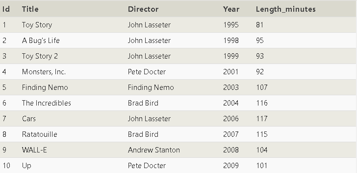
1.找到所有电影的名称title
SELECT title FROM movies;
2.找到所有电影的导演
SELECT director FROM movies;
3.找到所有电影的名称和导演
SELECT Title,director FROM movies;
条件查询
简单条件之where字句
真实情况下，我们很少直接查所有行，即使查询出来也看不完。 为了更精确的查询出特定数据，我们需要学习一个新的SQL语法：SELECT查询的 WHERE 子句. 一个查询的 WHERE子句用来描述哪些行应该进入结果，具体就是通过 condition条件 限定这些行的属性满足某些具体条件。
条件查询语法
SELECT column, another_column, …
FROM mytable
WHERE condition
AND/OR another_condition
AND/OR …;
注：这里的 condition 都是描述属性列的，具体会在下面的表格体现。
可以用AND or OR这两个关键字来组装多个条件， 下面的具体语法规则，可以用来筛选数字属性列（包括整数，浮点数）:
| Operator（关键字） | Condition（意思） | SQL Example(例子） |
| =, !=, < <=, >, >= | Standard numerical operators 基础的 大于，等于等比较 | col_name != 4 |
| BETWEEN … AND … | Number is within range of two values (inclusive) 在两个数之间 | col_name BETWEEN 1.5 AND 10.5 |
| NOT BETWEEN … AND … | Number is not within range of two values (inclusive) 不在两个数之间 | col_name NOT BETWEEN 1 AND 10 |
| IN (…) | Number exists in a list 在一个列表 | col_name IN (2, 4, 6) |
| NOT IN (…) | Number does not exist in a list 不在一个列表 | col_name NOT IN (1, 3, 5) |
小贴士?
虽然之前我们的SQL关键字如 SELECT, WHERE, AND,OR 都是大写的， 但SQL其实是兼容写成 select,where小写的. 大写这些关键字有助于我们把 关键字 和 你的表名，列名区分开，让SQL更容易理解。
练习：
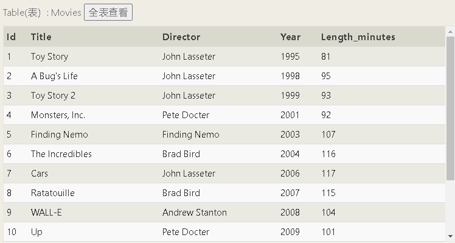
1.找到id为6的电影
SELECT * FROM movies where id=6
2.找到在2000-2010年间year上映的电影
SELECT * FROM movies where year between 2000 and 2010（解法一）
SELECT * FROM movies where year>2000 and year<2010（解法二）
3.找到不是在2000-2010年间year上映的电影
SELECT * FROM movies where year not between 2000 and 2010（解法一）
SELECT * FROM movies where year<2000 or year>2010（解法二）
4.找到头5部电影
SELECT * FROM movies where id<=5
5.找到2010（含）年之后的电影里片长小于两个小时的片子
SELECT * FROM movies where year>=2010 and Length_minutes<120
复杂条件
如果属性是字符串, 我们会用到字符串相关的一些操作符号，下面这个表格对字符串操作符有详细的描述:
| Operator（操作符） | Condition（解释） | Example（例子） |
|---|---|---|
| = | Case sensitive exact string comparison (notice the single equals)完全等于 | col_name = "abc" |
| != or <> | Case sensitive exact string inequality comparison 不等于 | col_name != "abcd" |
| LIKE | Case insensitive exact string comparison 没有用通配符等价于 = | col_name LIKE "ABC" |
| NOT LIKE | Case insensitive exact string inequality comparison 没有用通配符等价于 != | col_name NOT LIKE "ABCD" |
| % | Used anywhere in a string to match a sequence of zero or more characters (only with LIKE or NOT LIKE) 通配符，代表匹配0个以上的字符 | col_name LIKE "%AT%" (matches "AT", "ATTIC", "CAT" or even "BATS") "%AT%" 代表AT 前后可以有任意字符 |
| _ | Used anywhere in a string to match a single character (only with LIKE or NOT LIKE) 和% 相似，代表1个字符 | col_name LIKE "AN_" (matches "AND", but not "AN") |
| IN (…) | String exists in a list 在列表 | col_name IN ("A", "B", "C") |
| NOT IN (…) | String does not exist in a list 不在列表 | col_name NOT IN ("D", "E", "F") |
小贴士?
在字符串表达式中的字符串需要用引号 " 包含， 如果不用引号，SQL会认为是一个属性列的名字， 如：col_name = color 表示 col_name和color两个属性一样的行 col_name = "color" 表示 col_name 属性为字符串 "color"的行.
练习：
1.找到所有Toy Story系列电影
SELECT * FROM movies where title like "%toy story%"
2.找到所有John Lasseter导演的电影
SELECT * FROM movies where director like "John Lasseter"
3.找到所有不是John Lasseter导演的电影
SELECT * FROM movies where director not like "John Lasseter"
4.找到所有电影名为 "WALL-" 开头的电影
SELECT * FROM movies where title like "WALL-_"
5.有一部98年电影中文名《虫虫危机》请给我找出来
SELECT * FROM movies where title like "A Bug's Life"
结果过滤
DISTINCT语法
DISTINCT关键字可以指定某个或某些属性列唯一返回，拿之前的 Movies表来说，一个导演在一列中出现多次， distinct会删除重复项，将一列中多次出现的值唯一返回。
小贴士?
虽然之前我们的SQL关键字如 SELECT, WHERE, AND,OR 都是大写的， 但SQL其实是兼容写成 select,where小写的. 大写这些关键字有助于我们把 关键字 和 你的表名，列名区分开，让SQL更容易理解。
结果排序 （Ordering results）
可以用 ORDER BY col_name 排序的语法来让结果按一个或多个属性列做排序.
结果排序（ordered results）
SELECT column, another_column, …
FROM mytable
WHERE condition(s)
ORDER BY column ASC/DESC;
ORDER BY col_name 这句话的意思就是让结果按照 col_name 列的具体值做 ASC升序 或 DESC 降序， 对数字来说就是升序 1，2，3，... 或降序 ... 3,2,1 . 对于文本列，升序和降序指的是按文本的字母序。
limit和offset
LIMIT 和 OFFSET 子句通常和ORDER BY 语句一起使用，当我们对整个结果集排序之后， 我们可以 LIMIT来指定只返回多少行结果 ,用 OFFSET来指定从哪一行开始返回。 你可以想象一下从一条长绳子剪下一小段的过程，我们通过 OFFSET 指定从哪里开始剪，用 LIMIT 指定剪下多少长度。
limited查询
SELECT column, another_column, …
FROM mytable
WHERE condition(s)
ORDER BY column ASC/DESC
LIMIT num_limit OFFSET num_offset;
练习：
1.按导演名排重列出所有电影(只显示导演)，并按导演名正序排列
SELECT distinct director FROM movies order by director asc
2.列出按上映年份最新上线的4部电影
select * from movies order by year desc limit 4
注：asc是小数在前，大数再后，desc反之
3.按电影名字母序升序排列，列出前5部电影
select * from movies order by title asc limit 5
4.按电影名字母序升序排列，列出上一题之后的5部电影
select * from movies order by title asc limit 5 offset 5
注：注意offset的有效边界值，显示第五条之后的，那么offset后的值为5
5.如果按片长排列，John Lasseter导演导过片长第3长的电影是哪部，列出名字即可
select title from movies where director like "John Lasseter" order by length_minutes desc limit 1
offset 2
注：注意题干“列出名字即可”以及limit和offset后的值
复习select查询
SELECT查询语法
SELECT column, another_column, …
FROM mytable
WHERE condition(s)
ORDER BY column ASC/DESC
LIMIT num_limit OFFSET num_offset;
练习：
小贴士?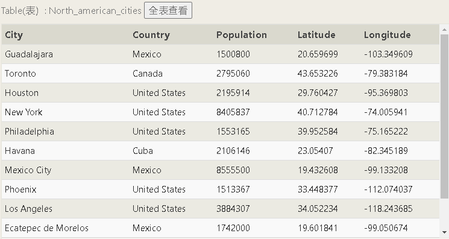
在这个数据表中，你需要熟悉一下latitudes（纬度）和 longitudes（经度）的概念， latitudes在赤道以北是正数， 以南是负数；longitudes在子午线东部是正数，以西是负数， 在查询中需要注意 经纬度和东西南北方向的对应关系。
1.列出所有加拿大人的Canadian信息(包括所有字段)
SELECT * FROM north_american_cities where country like "canada"
注：Canada记得加 引号
2.列出所有在Chicago西部的城市，从西到东排序(包括所有字段)
SELECT * FROM north_american_cities where longitude<-87.629798 order by longitude asc
注：不要想的太复杂，直接找到Chicago对应的longitude值，用该值做条件筛选即可
3.用人口数population排序,列出墨西哥Mexico最大的2个城市(包括所有字段)
SELECT * FROM north_american_cities where country like "Mexico" order by population desc limit 2
4.列出美国United States人口3-4位的两个城市和他们的人口(包括所有字段)
SELECT * FROM north_american_cities where country like "United States" order by population desc
limit 2 offset 2
多表联查
数据库范式
数据库范式是数据表设计的规范，在范式规范下， 数据库里每个表存储的重复数据降到最少（这有助于数据的一致性维护），同时在数据库范式下，表和表之间不再有很强的数据耦合， 可以独立的增长 (ie. 比如汽车引擎的增长和汽车的增长是完全独立的). 范式带来了很多好处，但随着数据表的分离， 意味着我们要查询多个数据属性时，需要更复杂的SQL语句， 也就是本节开始介绍的多表连接技术。这样SQL的性能也会面临更多的挑战，特别是当大数据量的表很多的情况下.
join多表联查
主键(primary key) , 一般关系数据表中，都会有一个属性列设置为 主键(primary key)。 主键是唯一标识一条数据的，不会重复，一个最常见的主键就是auto-incrementing integer(自增ID，每写入一行数据ID+1, 当然字符串，hash值等只要是每条数据是唯一的也可以设为主键.
INNER JOINs
借助主键(primary key)（当然其他唯一性的属性也可以）， 我们可以把两个表中具有相同主键ID的数据连接起来（因为一个ID可以简要的识别一条数据，所以连接之后还是表达的同一条数据）。 用到 JOIN 关键字。先来学习 INNER JOIN.
用INNER JOIN 连接表的语法：通过ON条件描述的关联关系;INNER JOIN 先将两个表数据连接到一起.
SELECT column, another_table_column, …
FROM mytable （主表）
INNER JOIN another_table （要连接的表）
ON mytable.id = another_table.id (想象一下刚才讲的主键连接，两个相同的连成1条)
WHERE condition(s)
ORDER BY column, … ASC/DESC
LIMIT num_limit OFFSET num_offset;
两个表中如果通过ID互相找不到的数据将会舍弃。此时，你可以将连表后的数据看作两个表的合并，
SQL中的其他语句会在这个合并基础上 继续执行（想一下和之前的单表操作就一样了）.
还有一个理解INNER JOIN的方式，就是把 INNER JOIN 想成两个集合的交集。
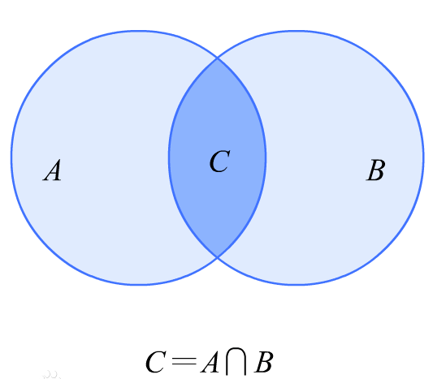
小贴士?
INNER JOIN 可以简写做 JOIN. 两者是相同的意思， 但我们还是会继续写作 INNER JOIN 以便和后面的 LEFT JOIN， RIGHT JOIN等相比较.
练习：

1.找到所有电影的国内Domestic_sales和国际销售额
SELECT * FROM movies inner join Boxoffice on id=movie_id
2.找到所有国际销售额比国内销售大的电影
SELECT * FROM movies inner join Boxoffice on id=movie_id
where international_sales>Domestic_sales
3.找出所有电影按市场占有率rating倒序排列
SELECT * FROM movies inner join Boxoffice on id=movie_id order by rating desc
4.每部电影按国际销售额比较,排名最靠前的导演是谁,国际销量多少
SELECT director,International_sales FROM movies inner join Boxoffice on id=movie_id order by
International_sales desc limit 1
OUTER JOINs
INNER JOIN 只会保留两个表都存在的数据（还记得之前的交集吗）， 这可能会导致一些数据的丢失.
真实世界中两个表存在差异很正常，所以我们需要更多的连表方式， 也就是本节要介绍的左连接LEFT JOIN,右连接RIGHT JOIN 和 全连接FULL JOIN. 这几个 连接方式都会保留不能匹配的行。
用LEFT/RIGHT/FULL JOINs 做多表查询和INNER JOIN 语法几乎是一样的. 我们看看这三个连接方法的工作原理：
SELECT column, another_column, …
FROM mytable
INNER/LEFT/RIGHT/FULL JOIN another_table
ON mytable.id = another_table.matching_id
WHERE condition(s)
ORDER BY column, … ASC/DESC
LIMIT num_limit OFFSET num_offset;
在表A 连接 B, LEFT JOIN保留A的所有行，不管有没有能匹配上B 反过来 RIGHT JOIN则保留所有B里的行。 最后FULL JOIN 不管有没有匹配上，同时保留A和B里的所有行
可以用集合的图示来描述：
LEFT: 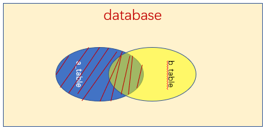 RIGHT: 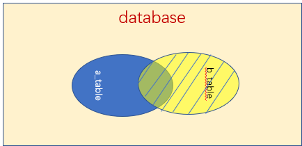 FULL: 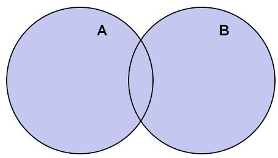
小贴士?
这些Join也可以写作 LEFT OUTER JOIN, RIGHT OUTER JOIN, 或 FULL OUTER JOIN, 和 LEFT JOIN, RIGHT JOIN, and FULL JOIN 等价.
练习：
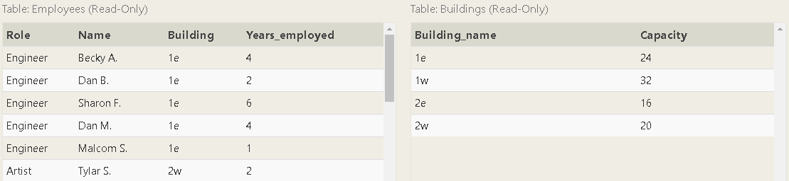1.找到所有有雇员的办公室(buildings)名字
SELECT DISTINCT building FROM employees where building is not null
2.找到所有办公室里的所有角色（包含没有雇员的）,并做唯一输出(DISTINCT)
SELECT distinct buildings.Building_name,employees.role FROM Buildings left join
employees on employees.building=buildings.Building_name
3.找到所有有雇员的办公室(buildings)和对应的容量
select distinct Building_name,Capacity
from Employees left join Buildings on Employees.building=Buildings.Building_name
where Building_name is not null（方法一）
select distinct Building_name,Capacity
from Employees left join Buildings on Employees.building=Buildings.Building_name
where Years_employed>0（方法二）
关键字NULL
在数据库中，NULL表达的是 "无"的概念，或者说没有东西。因为 NULL的存在， 我们需要在编写SQL时考虑到某个属性列可能是 NULL的情况， 这种特殊性会造成编写SQL的复杂性，所以没有必要的情况下， 我们应该尽量减少 NULL的使用，让数据中尽可能少出现 NULL的情况。
如果某个字段你没有填写到数据库，很可能就会出现NULL 。 所有一个常见的方式就是为字段设置默认值,比如 数字的默认值设置为0，字符串设置为 ""字符串. 但是在一些NULL 表示它本来含义的场景，需要注意是否设置默认值还是保持NULL。 (比如, 当你计算一些行的平均值的时候，如果是0会参与计算导致平均值差错，是NULL则不会参与计算).
还有一些情况很难避免 NULL 的出现, 比如之前说的 outer-joining 多表连接，A和B有数据差异时， 必须用 NULL 来填充。这种情况，可以用IS NULL和 IS NOT NULL 来选在某个字段是否等于 NULL.
在查询条件中处理 NULL
SELECT column, another_column, …
FROM mytable
WHERE column IS/IS NOT NULL
AND/OR another_condition
AND/OR …;
练习：
1.找到雇员里还没有分配办公室的(列出名字和角色就可以)
SELECT name,role FROM employees where building is null
2.找到还没有雇员的办公室
SELECT Building_name FROM buildings
left join employees on buildings.building_name=employees.building where name is null
使用表达式
之前我们在SQL中的出现col_name（属性名）的 地方，我们都只是写上col_name自身。 其实在SQL中可以用col_name的地方，都可以用表达式 来指定对属性进行一定的计算或处理。 表达式可以对 数字运算，对字符串运算，也可以在表达式中只包含常量不包含col_name(如：SELECT 1+1）
包含表达式的例子:
SELECT particle_speed / 2.0 AS half_particle_speed (对结果做了一个除2）
FROM physics_data
WHERE ABS(particle_position) * 10.0 >500
（条件要求这个属性绝对值乘以10大于500）;
每一种数据库（mysql，sqlserver等）都有自己的一套函数，包含常用的数字，字符串，时间等处理过程. 具体需要参看相关文档。
当我们用表达式对col属性计算时，很多事可以在SQL内完成， 这让SQL更加灵活，但表达式如果长了则很难一下子读懂。所以SQL提供了AS关键字， 来给表达式取一个别名.
属性列和表取别名的例子:
SELECT column AS better_column_name, …
FROM a_long_widgets_table_name AS mywidgets
INNER JOIN widget_sales
ON mywidgets.id = widget_sales.widget_id;
练习：
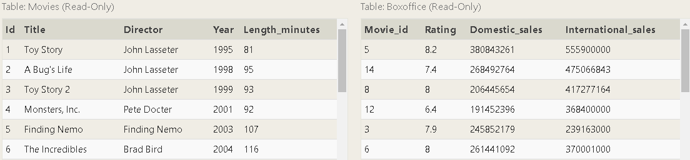1.列出所有的电影ID,名字和销售总额(以百万美元为单位计算)
SELECT id,title,(Domestic_sales+International_sales)/1000000 as sale FROM movies
inner join boxoffice on movies.id=boxoffice.Movie_id
注：注意细节，“以百万美元为单位”
2.列出所有的电影ID,名字和市场指数(Rating的10倍为市场指数)
SELECT id,title,10*rating as rate FROM movies inner join boxoffice on movies.id=boxoffice.Movie_id
3.列出所有偶数年份的电影，需要电影ID,名字和年份
select id, title,year from movies where year%2=0
4.John Lasseter导演的每部电影每分钟值多少钱,告诉我最高的3个电影名和价值就可以
select title,(Domestic_sales+International_sales)/Length_minutes as value
from movies inner join Boxoffice on movies.id=Boxoffice.Movie_id
where Director like "John Lasseter" order by value desc limit 3
查询统计I
SQL默认支持一组统计表达式，可以完成数据统计
对全部结果数据做统计
SELECT AGG_FUNC(column_or_expression) AS aggregate_description, …
FROM mytable
WHERE constraint_expression;
常见统计函数
| Function | Description |
| COUNT(*), COUNT(column) | 计数！COUNT(*) 统计数据行数，COUNT(column) 统计column非NULL的行数. |
| MIN(column) | 找column最小的一行. |
| MAX(column) | 找column最大的一行. |
| AVG(column) | 对column所有行取平均值. |
| SUM(column) | 对column所有行求和. |
| Docs: MySQL, Postgres, SQLite, Microsoft SQL Server | |
分组统计
GROUP BY 数据分组语法可以按某个col_name对数据进行分组，如：GROUP BY Year指对数据按年份分组， 相同年份的分到一个组里。如果把统计函数和GROUP BY结合，那统计结果就是对分组内的数据统计了. GROUP BY 分组结果的数据条数，就是分组数量
用分组的方式统计：
SELECT AGG_FUNC(column_or_expression) AS aggregate_description, …
FROM mytable
WHERE constraint_expression
GROUP BY column;
练习：
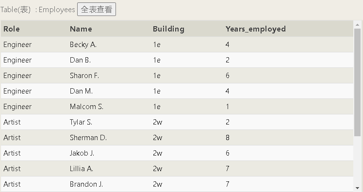1.找出就职年份最高的雇员(列出雇员名字+年份）
SELECT Name,Max(Years_employed) FROM employees
注：记得用max（）统计函数
2.按角色(Role)统计一下每个角色的平均就职年份
SELECT role,avg(years_employed) as year FROM employees group by role
3.按办公室名字总计一下就职年份总和
ELECT building,sum(years_employed) as year FROM employees
group by building
4.每栋办公室按人数排名,不要统计无办公室的雇员
SELECT building,count(name) as number FROM employees
where building is not null group by building
查询统计II
在 GROUP BY 分组语法中，我们知道数据库是先对数据做WHERE，然后对结果做分组， 如果我们要对分组完的数据再筛选出几条如何办？
一个不常用的语法 HAVING 语法将用来解决这个问题，他可以对分组之后的数据再做SELECT筛选.
用HAVING进行筛选
SELECT group_by_column, AGG_FUNC(column_expression) AS aggregate_result_alias, …
FROM mytable
WHERE condition
GROUP BY column
HAVING group_condition;
HAVING 和 WHERE 语法一样，只不过作用的结果集不一样. 当你的数据量成千上万属性又很多时也许能帮上大忙 .
练习：
1.统计一下Artist角色的雇员数量
SELECT count(role) FROM employees where role like "Artist"(方法一)
SELECT count(*) FROM employees WHERE Role = 'Artist'（方法二）
2.按角色统计一下每个角色的雇员数量
SELECT role,count(*) FROM employees group by role
注：先分组后统计
3.算出Engineer角色的就职年份总计
SELECT sum(years_employed) FROM employees where role="Engineer"
4.按角色分组算出每个角色按有办公室和没办公室的统计人数(列出角色，数量，有无办公室,
注意一个角色如果部分有办公室，部分没有需分开统计）
SELECT role, count(*),building is not null as b FROM employees group by
role,b
综合复习
把之前的所有语法集中到一个句子中.
这才是完整的SELECT查询
SELECT DISTINCT column, AGG_FUNC(column_or_expression), …
FROM mytable
JOIN another_table
ON mytable.column = another_table.column
WHERE constraint_expression
GROUP BY column
HAVING constraint_expression
ORDER BY column ASC/DESC
LIMIT count OFFSET COUNT;
一个查询SQL的执行总是先从数据里按条件选出数据，然后对这些数据再次做一些整理处理， 按要求返回成结果，让结果尽可能是简单直接的。
执行顺序
1. FROM 和 JOINs
FROM 或 JOIN会第一个执行，确定一个整体的数据范围. 如果要JOIN不同表，可能会生成一个临时Table来用于 下面的过程。 总之第一步可以简单理解为确定一个数据源表（含临时表)
2. WHERE
确定了数据来源 WHERE 语句就将在这个数据源中按要求进行数据筛选，并丢弃不符合要求的数据行， 所有的筛选col属性 只能来自FROM圈定的表. AS别名还不能在这个阶段使用，因为可能别名是一个还没执行的表达式
3. GROUP BY
如果你用了 GROUP BY 分组，那GROUP BY 将对之前的数据进行分组，统计等， 并将是结果集缩小为分组数.这意味着 其他的数据在分组后丢弃.
4. HAVING
如果你用了 GROUP BY 分组, HAVING 会在分组完成后对结果集再次筛选。AS别名也不能在这个阶段使用.
5. SELECT
确定结果之后，SELECT用来对结果col简单筛选或计算，决定输出什么数据.
6. DISTINCT
如果数据行有重复DISTINCT 将负责排重.
7. ORDER BY
在结果集确定的情况下，ORDER BY 对结果做排序。因为SELECT中的表达式已经执行完了。此时可以用AS别名.
8. LIMIT / OFFSET
最后 LIMIT 和 OFFSET 从排序的结果中截取部分数据.
结论
不是每一个SQL语句都要用到所有的句法，但灵活运用以上的句法组合和深刻理解SQL执行原理将能在SQL层面更好的解决数据问题， 而不用把问题 都抛给程序逻辑.
练习：
1.统计出每一个导演的电影数量（列出导演名字和数量）
SELECT director,count(title) FROM movies group by director
2.统计一下每个导演的销售总额(列出导演名字和销售总额)
select director,Domestic_sales+ International_sales as sales from Movies
left join Boxoffice on Movies.id=Boxoffice.movie_id group by director
3.按导演分组计算销售总额,求出平均销售额冠军（统计结果过滤掉只有单部电影的导演，列出导演名，总销量，电影数量，平均销量)
SELECT director, sum(Domestic_sales +International_sales) as sales,count(*) as
count,avg(Domestic_sales +International_sales) as number
FROM movies left join Boxoffice on Movies.id=Boxoffice.Movie_id group by director
having count(*)>1 order by number desc limit 1
4.找出每部电影和单部电影销售冠军之间的销售差，列出电影名，销售额差额
select title,(SELECT (Domestic_sales+International_sales) as total_sale FROM movies
left join boxoffice on movies.id = boxoffice.movie_id
order by total_sale desc limit 1)-(Domestic_sales+ International_sales) as sales
from Movies left join Boxoffice on Movies.id=Boxoffice.movie_id
插入行
什么是架构？
先前我们将数据库中的表描述为行和列的二维集，其中列是属性，行是表中实体的实例。在SQL中， 数据库架构描述了每个表的结构以及表的每个列可以包含的数据类型。
示例：相关子查询
例如，在我们的电影表中，“年份”列中的值必须为“整数”，而“标题”列中的值必须为“字符串”。
尽管存储了数百万甚至数十亿行，但这种固定的结构使数据库高效且一致。
插入数据
将数据插入数据库时，我们需要使用一条INSERT语句，该语句声明要写入的表，要填充的数据列以及要插入的一行或多行数据。 通常，您插入的每一行数据应包含表中每个对应列的值。您可以一次插入多个行，只需按顺序列出即可。
使用所有列的值插入语句
INSERT INTO mytable
VALUES (value_or_expr, another_value_or_expr, …),
(value_or_expr_2, another_value_or_expr_2, …),
…;
在某些情况下，如果数据不完整并且表中包含支持默认值的列，则可以通过显式指定仅包含数据列的行。
插入具有特定列的语句
INSERT INTO mytable
(column, another_column, …)
VALUES (value_or_expr, another_value_or_expr, …),
(value_or_expr_2, another_value_or_expr_2, …),
…;
在这些情况下，值的数量必须与指定的列数匹配。尽管这是一个较为冗长的语句，但以这种方式插入值仍具有向前兼容的优点。
例如，如果您向表中添加具有默认值的新列，则无需INSERT更改硬编码的语句即可适应该更改。
此外，可以将数学表达式和字符串表达式与要插入的值一起使用。
这对于确保以某种方式格式化所有插入的数据很有用
练习：
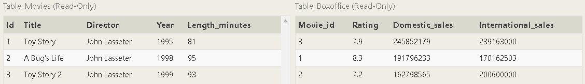1.将工作室的新作品Toy Story 4添加到电影列表中（您可以使用任何导演）
insert into movies values(4,"Toy Story 4","John Lasseter",2020,90)
注：字符串记得加引号
2.Toy Story 4已广受好评！它的评分为8.7，国内3.4亿，国际2.7亿。将记录添加到BoxOffice表中。
insert into Boxoffice values(4,8.7,37000000,2700000000)
更新行
除了添加新数据，常见的任务是更新现有数据，这可以使用UPDATE语句来完成 。与该INSERT语句类似，您必须确切指定要更新的表， 列和行。此外，您要更新的数据必须与表架构中列的数据类型匹配。
用值更新语句
UPDATE mytable
SET column = value_or_expr,
other_column = another_value_or_expr,
…
WHERE condition;
该语句通过采用多个列/值对，并将这些更改应用于满足该WHERE子句中约束的每一行而起作用。
注意：大多数使用SQL的人都会在某一点或另一点更新数据时出错。无论是在生产数据库中更新错误的行集， 还是无意中遗漏了WHERE 子句（导致更新应用于所有行），在构造UPDATE语句时都需要格外小心。 一个有用的技巧是始终写约束并在SELECT查询中对其进行测试，以确保您更新的是正确的行，然后才写入列/值对进行更新。
练习：
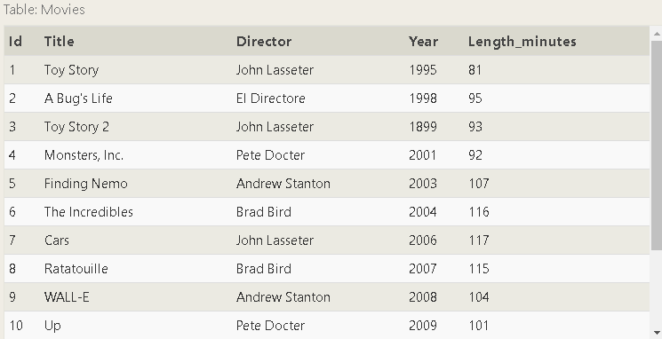1.A Bug's Life的导演不正确，实际上是由John Lasseter执导的
update movies set director= "John Lasseter" where title ="A Bug's Life"
2.Toy Story 2发布的年份不正确，实际上是在1999年发布的
update movies set Year= "1999" where title ="Toy Story 2"
3.Toy Story 8的标题和导演都不正确！标题应该是“Toy Story 3”，它是由Lee Unkrich导演的
update movies set title = "Toy Story 3",director="Lee Unkrich"
where title ="Toy Story 8"
删除行
当需要从数据库中的表中删除数据时，可以使用一条DELETE语句来描述要执行的表，并通过该WHERE子句删除表中的行
删除条件语句
DELETE FROM mytable
WHERE condition;
如果决定不使用WHERE约束，则将删除所有行，这是一种彻底清除表的快速简便方法（如果有意的话）。
注意：像UPDATE语句一样，建议您首先在SELECT查询中运行约束，以确保删除正确的行 。如果没有适当的备份或测试数据库， 那么彻底地删除数据是很容易的，因此请务必DELETE两次阅读语句并执行一次。
练习：
1.这个数据库太大了，可以删除2005年之前发行的所有电影。
delete from movies where Year<2005
2.Andrew Stanton已经离开了电影制片厂，因此请删除他执导的所有电影。
delete from movies where Director like "Andrew Stanton"
注：记得加引号
创建表
当您要在数据库中存储新的实体和关系时，可以使用该CREATE TABLE语句创建新的数据库表。
创建带有可选表约束和默认值的表语句
CREATE TABLE IF NOT EXISTS mytable (
column DataType TableConstraint DEFAULT default_value,
another_column DataType TableConstraint DEFAULT default_value,
…
);
新表的结构由其表架构定义，该架构定义了一系列列。每列都有一个名称，该列中允许的数据类型， 对要插入的值的可选表约束以及可选的默认值。如果已经存在一个具有相同名称的表，则SQL实现通常会引发错误， 因此可以使用该IF NOT EXISTS子句来抑制该错误并跳过创建表（如果存在）的情况
表数据类型
不同的数据库支持不同的数据类型，但是常见的类型支持数字，字符串以及其他杂项，例如日期，布尔值，甚至二进制数据。 这是您可能在真实代码中使用的一些示例。
| 数据类型 | 描述 |
INTEGER, BOOLEAN |
整数数据类型可以存储整个整数值，例如数字或年龄。布尔值仅表示为仅0或1的整数值。 |
FLOAT, DOUBLE, REAL |
浮点数据类型可以存储更精确的数字数据，例如测量值或分数值。根据该值所需的浮点精度，可以使用不同的类型。 |
CHARACTER(num_chars), VARCHAR(num_chars), TEXT |
基于文本的数据类型可以在各种语言环境中存储字符串和文本。在使用这些列时，各种类型之间的区别通常会影响数据库的效率。 CHARACTER和VARCHAR（可变字符）类型都指定了它们可以存储的最大字符数（可能会截断更长的值），因此可以更有效地存储和查询大表。 |
DATE, DATETIME |
SQL还可以存储日期和时间戳，以跟踪时间序列和事件数据。它们可能很难处理，尤其是在跨时区处理数据时。 |
BLOB |
最后，SQL可以将二进制数据直接存储在数据库中的blob中。这些值对于数据库通常是不透明的，因此通常必须将它们与正确的元数据一起存储才能重新查询它们。 |
| Docs: MySQL, Postgres, SQLite, Microsoft SQL Server | |
表约束
| 限制 | 描述 |
PRIMARY KEY（主键） |
这意味着该列中的值是唯一的，并且每个值都可用于标识该表中的单个行。 |
AUTOINCREMENT |
对于整数值，这意味着该值将自动填充，并随每次行插入而增加。并非所有数据库都支持。 |
UNIQUE |
这意味着该列中的值必须是唯一的，因此您不能在该列中插入与表中另一行具有相同值的另一行。 与`PRIMARY KEY`的不同之处在于，它不必是表中一行的键。 |
NOT NULL |
这意味着插入的值不能为“ NULL”。 |
CHECK (expression) |
这使您可以运行更复杂的表达式来测试插入的值是否有效。例如，您可以检查值是正数还是大于特定大小，或者以特定前缀开头等。 |
FOREIGN KEY |
这是一种一致性检查，可确保此列中的每个值都与另一个表中列中的另一个值相对应。 例如，如果有两个表，一个表按ID列出所有employee，另一个表列出其工资信息， 则“ FOREIGN KEY”可以确保工资表中的每一行都对应于主Employee列表中的有效雇员。 |
例子
这是到目前为止我们在课程中一直使用的Movies表的示例架构。
电影表架构
CREATE TABLE movies (
id INTEGER PRIMARY KEY,
title TEXT,
director TEXT,
year INTEGER,
length_minutes INTEGER
);
练习：
1.创建一个Database包含以下各列的新表：
–Name描述数据库名称的字符串（文本）
–Version该数据库最新版本的数字（浮点数）
–Download_count该数据库下载次数的整数
该表没有约束。
create table Database(
Name text,
Version float,
Download_count integer);
更改表
随着数据随时间的变化，SQL提供了一种使用ALTER TABLE语句添加，删除或修改列和表约束的方式来更新相应的表和数据库模式的方法。
添加列
添加新列的语法类似于在语句中创建新行时的语法CREATE TABLE 。您需要指定列的数据类型以及可能应用于现有和新行的所有潜在表约束和默认值。 在某些数据库（例如MySQL）中，您甚至可以使用FIRSTorAFTER子句指定在何处插入新列，尽管这不是标准功能。
修改表以添加新列
ALTER TABLE mytable
ADD column DataType OptionalTableConstraint
DEFAULT default_value;
移除列
删除列就像指定要删除的列一样容易，但是，某些数据库（包括SQLite）不支持此功能。 相反，您可能必须创建一个新表并迁移数据。
修改表以删除列
ALTER TABLE mytable
DROP column_to_be_deleted;
重命名表格
如果您需要重命名表本身，也可以使用RENAME TO语句的子句进行重命名
变更表格名称
ALTER TABLE mytable
RENAME TO new_table_name;
其它
我们的练习使用仅支持添加新列的实现
练习：
1.添加一个名为Aspect_ratio的列，该列具有FLOAT数据类型，以存储每部电影发行时的纵横比。
alter table movies add Aspect_ratio float
2.添加一个名为另一列语言与TEXT数据类型来存储电影在公布的语言。确保该语言默认为英语。
alter table movies add Language text default English
删除表
在极少数情况下，您可能希望删除包含其所有数据和元数据的整个表，并且可以这样做，您可以使用该DROP TABLE语句， 该语句与该DELETE语句的不同之处在于，它还可以从数据库中完全删除表架构。
删除表语句
DROP TABLE IF EXISTS mytable;
类似于该CREATE TABLE语句，如果指定的表不存在，数据库可能会引发错误，并且可以使用该IF EXISTS子句来抑制该错误。
另外，如果您有另一个要依赖于要删除的表中列的表（例如，具有FOREIGN KEY依赖关系），则必须先更新所有从属表以删除从属行，或完全删除这些表。
练习：
1.遗憾的是，我们已经结束了本课程的学习，请通过删除“电影”表进行 清理
drop table Movies
2.并删除BoxOffice表
drop table Boxoffice
特别注意
参考资料：